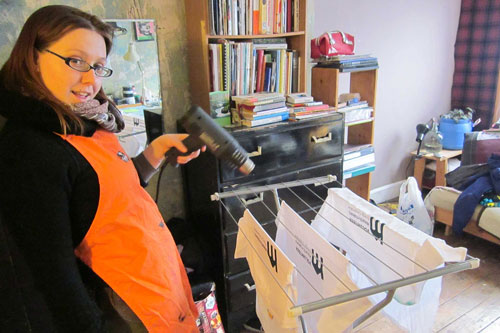
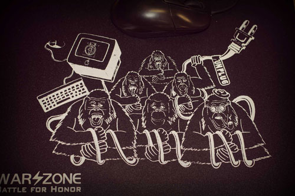
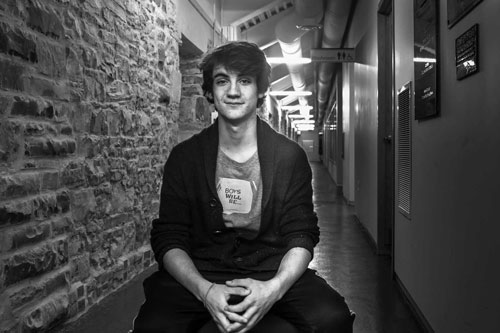
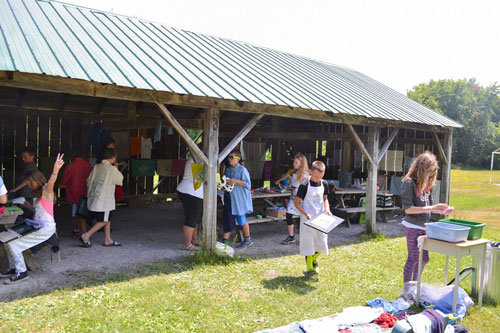
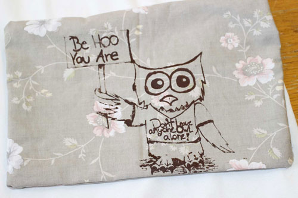

Creative Facilitation
Philosophy of Education
I believe everyone can connect with the most important tool of an artist: creativity. Students want to be seen and heard, however in many environments experience isolation as a result of structural barriers. I create pathways to creativity, a safe container to express opinions, and encouragement to try something new. In these workshops, participants will learn at least one new way to communicate something they know, feel, or believe about the world.
- Experiential Learning: Games promote leadership, teamwork, confidence, and creativity, easing our way into the artistic experience. You’ll want to add these warm-ups, energizers, and name games to your art-teacher toolbox.
- Inclusive Education: I support participants on the spectrum, and have experience adapting my programs for those with developmental or intellectual disabilities.
- Audience 101: Crafting an effective message starts with thinking of ways to catch the viewers attention…and keep it.
- All Angles, My Angle: Brainstorming and discussing issues relevant to our community or curriculum helps us see new ways of looking at where we stand.
- DIY Screenprinting: Use squeegees made from cassette tapes, screens made from gauze sheers, and use just tablespoons of water to clean silkscreens. Secondhand materials are a fun way to see sustainability in action and practice budget-conscious habits. Choose from patches, pillowcases, t-shirts or neckties from thrift stores.
- Artist Talk: Hear stories and process behind my fabric art for social change, see samples of patches and neckties.
Methodology
In order to make change, I invite people to experience the world in new ways while acknowledging their current position. (PICTURE OF ART OF HOSTING DIAGRAM) Through my study in PYE's Creative Community model, with internationally renowned facilitator Nadia Chaney, I've developed an experiential toolbox to bring groups together across difference. (CF Level 1 & 2 2014, 2015, Community Arts Mentorship, Art of Facilitation 2016) (I CAN ADD HYPERLINKS LATER)
My program ‘Pillow Talk’ is inspired by the art of Barbara Kruger, Jenny Holzer, and Corita Kent; three of my greatest influences, who use a few words and a single image, frequently from pop culture, as a challenge to the status quo. The beauty of a question or ambiguous statement is that it is a better conversation starter than an antagonistic statement. Conversations are just one way to effect change and should not be considered in isolation.
Recent programs have evolved collaboratively around themes of protest, power, gender, feminism, conflict resolution and mental wellness. These themes all reflect areas of study and artistic exploration in my practice.
Programs
Everything you need to know about making photo emulsion silkscreens
Want your group to know and be able to practice the fundamentals of photo-emulsion screenprinting?
- Incorporate second hand materials into a mobile studio.
- Troubleshoot problems that happen to all beginner screenprinters.
- Stretch mesh on wooden frames.
- Transfer high detail images with photo emulsion.
- Prepare a design for screenprinting.
- Learn how to creatively print using repurposed cassette tape case squeegees.
- Keep the screen you made in class to print up to 200 t-shirts (one or two t-shirts is fine too)!
- Ask me everything about what it's like to be a screenprinter! Lots of chances for one-on-one mentorship and advice on individual projects.
Time: For groups of 25, 600 minutes (3 days minimum); for groups of 15, 500 minutes (2 days minimum); for groups of 4 or fewer, 400 minutes (1 day minimum)
Age: Age 14+ (recommended for artists, activists, High Skills Major, Focus and College programs centered on art, fashion, marketing, and graphic design)
Note: Site requirements include a large closet with accessible shelving at least 8" wide, deep sink with threaded faucet end for adapter.
Almost everything you need to know about photo emulsion silkscreens
- Make silkscreens to use within a classroom project, fundraiser, or campaign.
- Building screens helps build tool competencies, body awareness, and teamwork. It is a very empowering process for students who value hands-on learning. Much like a cooking class, we will be stretching/preparing screens (learning about ergonomics, proper tool use, cutting fabric, materials used in screenprinting, and teamwork) and exposing four screens in groups.
Time: 3-4 hrs (CHANGE TO MINUTES?)
Requirements: Print-ready designs. Prior experience screenprinting. Recommended as an add-on to a Screenprinting Party or Pillow Talk.
Age: 12+
Screenprinting Party
THIS IS THE BIG DAY! A guaranteed winner with any group, screenprinting parties are a chance for everyone to shine and make their own personalized t-shirt. Great for bands, social justice groups, fundraisers, or team building events.
Imagination stations (can be run by parent or student volunteers) provide opportunities to sew, add paint/sharpie embellishments, or assemble pillowcases. Make use of the skills you have in your community and create opportunities for connection.
I make the screens ahead of time in order to allow participants to just focus on creation and connection. Below are details about custom screen fees (screen fees include processing of your images or preparation of images requested by your group):
- $60/screen for 1-4 screens
- $50/screen for 5-10 screens (recommended!)
- $40/screen for 11-25 screens
Time: 1 day
Age: 12+
Protest Art
A fast-paced, participant-led exploration of protest art from activists in North America over the last fifty years. Learn from history, develop a message, and create a piece that can be shared on social media, as public art, or at the next protest.
Time: 100 minutes
Conversation Starter T-shirts
Participants will screenprint a patch or t-shirt with a powerful, personalized message. Get creative, speak your mind, and express your style! This workshop pairs really well with the Protest Art workshop.
Time: 100-200 minutes
Contemporary Art Screenprinting for Families and Kids
Using ‘resists’ and silkscreens, your group will create personalized, multicoloured screenprinted t-shirts. Designs are drawn out through fun and accessible activities appropriate for all ages.
Custom photo-emulsion screens available using images related to themes of your choice. Children under 10 must be accompanied by family member or caregiver at all times.
Time: 200 minutes
Pillow Talk Artist Residency
Explore uncomfortable subjects by screenprinting on comfortable objects: pillowcases! In this popular inquiry-based workshop where anyone’s an artist, students conceptualize and develop a personalized message for screenprinting. Appropriate topics include but are not limited to mental wellness, social justice, or conflict resolution. By creating our own ‘unanswerable questions’ we can start a conversation that gets people talking, and creates new neural pathways towards change.
Curriculum links: NOT ADDED
Time: Artist residency is 5-8 full days
Age: Age 12+
Note: Can be run with two classes concurrently (i.e. full cohort, or grade 7 and 8). Pillow Talk modules consist of design thinking, question development, non-artists becoming artists, designing with fonts, cut and paste layouts, screen building, screenprinting party, and installation.